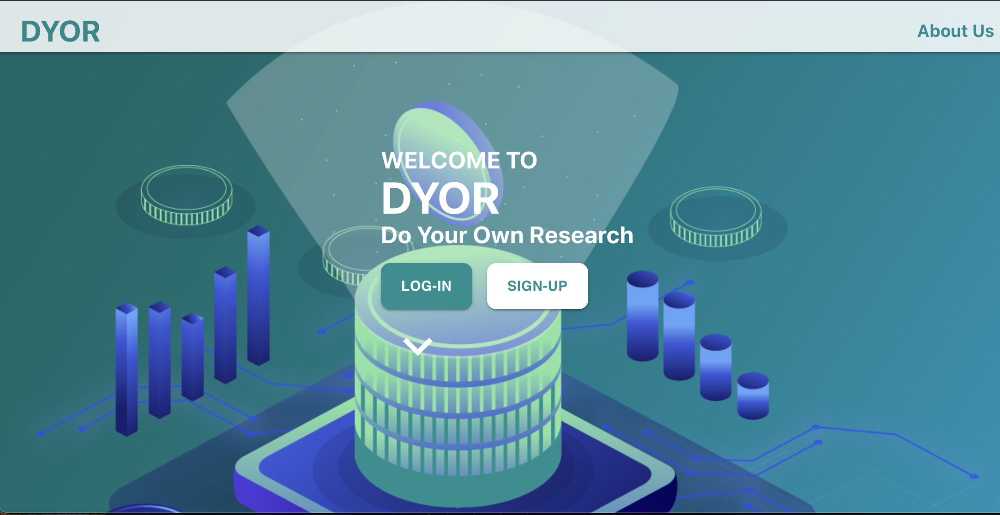

Sashank Silwal
’s Selected Web Dev Projects.
DYOR: Crypto Market Analysis Web App

• Developed a web application to help users better understand the crypto space by incorporating features like sentiment analysis, price prediction, and easy-to-access coin portfolio.
• Built back-end REST API in Express.js and served MongoDB data to custom-built React application through React Routers with Axios; implemented JWT authentication.
Github.